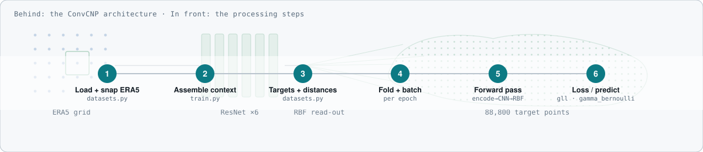
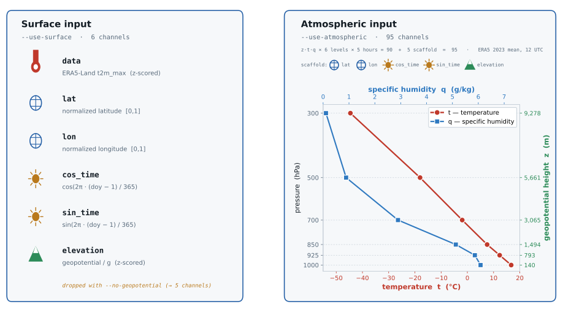
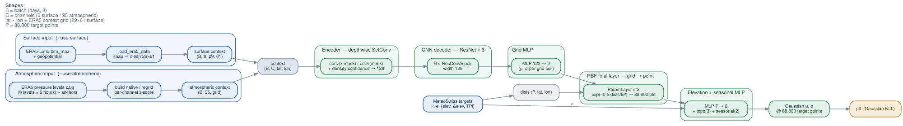
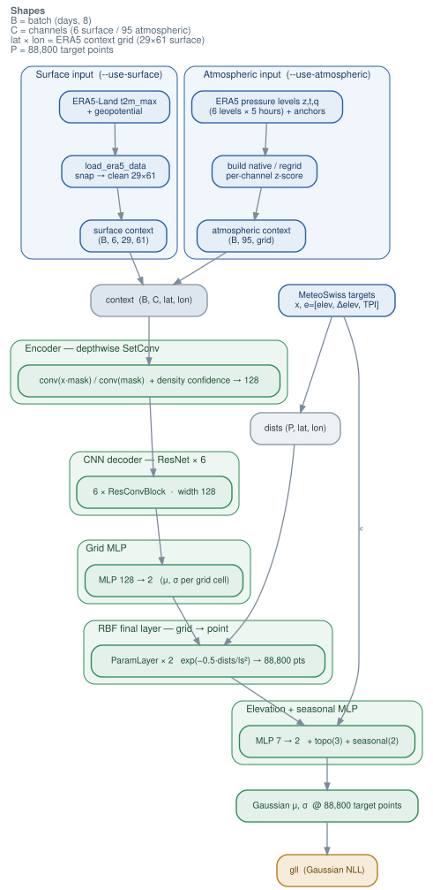
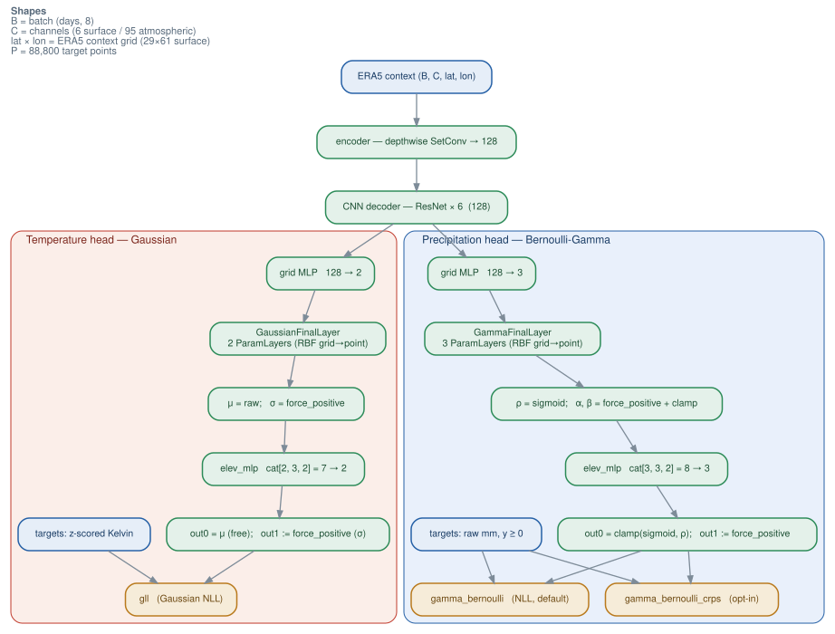
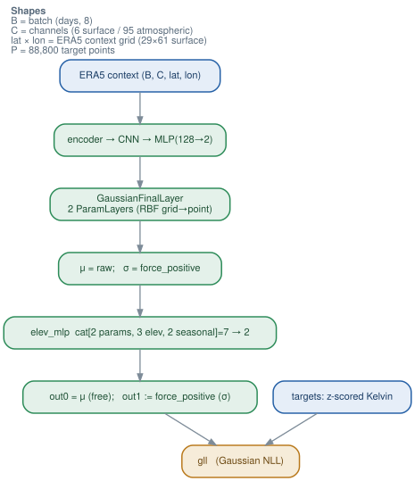

Static renders you can open anywhere — no browser plugin, no internet. Full code-exact prose lives in docs/data_pipelines.md; individual .svg/.png files sit beside this page in docs/diagrams/ and open directly in VS Code's image preview.
Regenerate the diagrams with python scripts/gen_pipeline_diagrams.py and python scripts/gen_input_channels_figure.py.
Overview

Overview (two-level) — the ConvCNP architecture as an ambient backdrop with the six processing steps in front.

Input channels — surface config (left, with icons) vs atmospheric config (right): a true ERA5 emagram with distinct t and q profiles and z geopotential height on the secondary axis; z·t·q × 6 levels × 5 hours = 90 channels.
Temperature architecture

Full tmax pipeline — horizontal — surface input (top) & atmospheric input (bottom) into the shared ConvCNP; each stage (encoder, CNN, MLPs, RBF, elevation MLP) boxed as its own zone.

Full tmax pipeline — vertical — the same architecture zones laid out top-to-bottom.
Output heads

Both heads — shared backbone branching into the Gaussian (tmax) and Bernoulli-Gamma (precip) heads on one graph.

§3 Temperature — Gaussian head: 2-param (μ,σ), single gll loss.